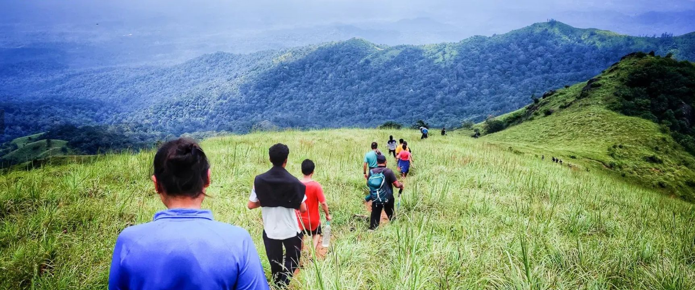
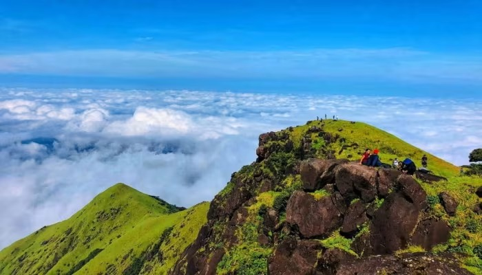
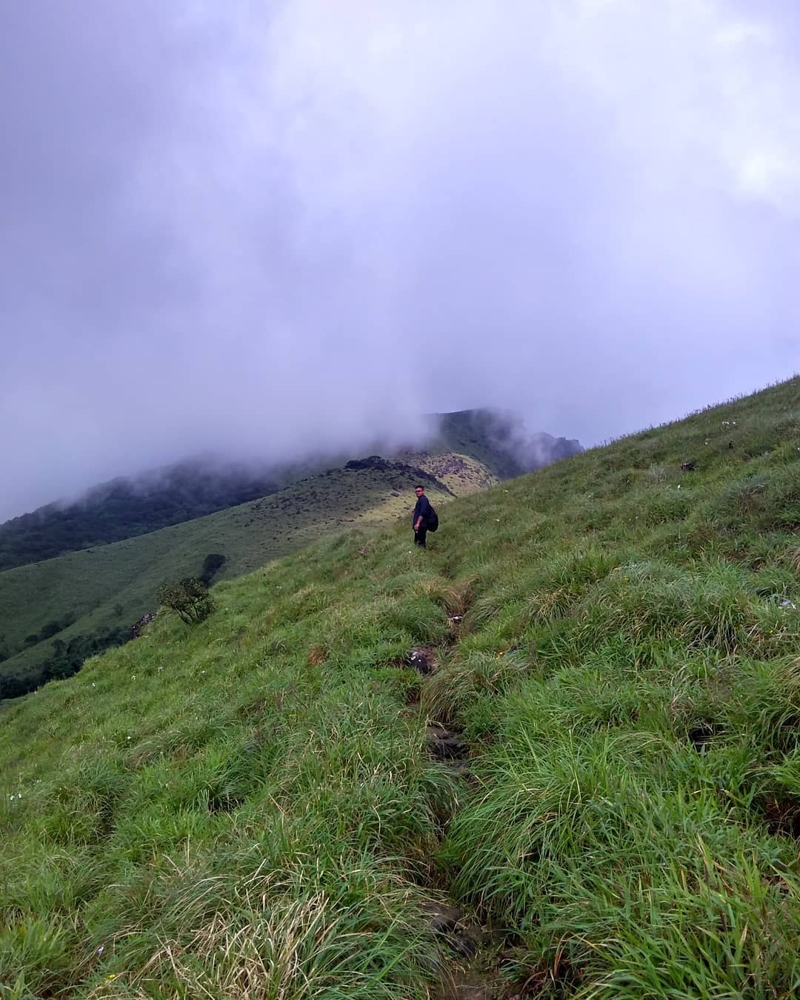

Max Alt: 1,712 mDistance: 14 km (total)Trek time: 7–8 hrsLevel: Moderate – DifficultSomwarpet, Coorg
ALL-INCLUSIVE FROM BENGALURU
₹4,199 per head
EARLY BIRD ₹3,999 · first 4 bookings
12-seater Tempo Traveller – small group
Forest ticket + forest guide
Shared homestay + campfire
4 meals incl. packed trek lunch
Sunday Coorg sightseeing
SHIKHARA TRAILS
How to Book

On the ridge
Forest Ticket – Please Read
Kumara Parvatha entry is only by online ticket from the Karnataka Forest Department (Aranya Vihaara). No tickets at the gate.
We book your forest ticket (₹300 – included in the price) in your name. Send us your full name exactly as on your Govt photo ID and the ID number.
Carry the same original ID on trek day. No ID = no entry – the forest staff check every trekker.
Forest tickets for the new season open in phases. Your seat is confirmed once your ticket is booked. No tickets for your date = full refund or move to the next batch.
Booking Policy
Pay ₹2,000 advance by GPay / PhonePe / UPI to block your seat – no website, no gateway charges.
Balance payment 7 days before departure. Seats are first come, first served.
Batch runs with minimum 10 bookings. If a batch doesn't fill, you move to the next batch or get a full refund.
A WhatsApp group is created 2 days before departure with pickup points, timings and the driver's details.
Under-18s need a parent's consent letter. Seniors may be asked for a fitness certificate.
1
WhatsApp usPay ₹2,000 and fill the short form with your ID details
2
We book your forest ticketYou get a confirmation once it's done
3
Pack & goJoin the trip group and meet us at your pickup point
Kaveri Nisargadhama – bamboo groves and the hanging bridge
3:45 PM
Depart for Bengaluru – tea / dinner stop on the way (own expense)
~9–10 PM
Back in Bengaluru – drop points shared in the WhatsApp group
Trek start time follows the slot on your forest ticket. All timings are approximate and depend on traffic, weather and forest department instructions.
Saturday is a long dayWe start early so the whole group is back at the base well before the forest closes at 6 PM. Sleep in the TT on Friday night!
Sunday is easySore legs are normal after the summit. Mallalli's steps are optional – the top viewpoint is just as pretty.
SHIKHARA TRAILS
Trek at a Glance
1,712 m
Summit height
~650 m
Total climb from Beedahalli (1,090 m)
14 km
7 km up · 7 km down, same route
7–8 hrs
Incl. summit break & lunch
Elevation Profile(approximate)
Forest Rules on the Trail
Forest guide compulsory1 guide per 10 trekkers, plus our trip leader
Tracking appInstall the forest dept's app on your phone
Original IDSame ID as on your forest ticket
No single-use plasticBags are checked at the gate
Day trek onlyNo camping, no fires · out by 6 PM
Turn-around 11:30 AMWherever we are – safety first

Above the clouds
Is this trek for me?
Yes, if you can walk 10 km comfortably and climb 15–20 floors of stairs without stopping. The last stretch has steep rock patches where you use your hands.
Not for: recent surgery, uncontrolled BP / heart conditions, or serious knee problems.
SHIKHARA TRAILS
What's Included
Inclusions
Return travel from Bengaluru in a 12-seater Tempo Traveller – tolls, parking & driver bata included
Kumara Parvatha forest entry ticket (₹300) – booked in your name
Forest Department nature guide + our trip leader with a first-aid kit
1 night shared homestay near Somwarpet – separate rooms & washrooms for men and women, early check-in to freshen up
4 meals – Saturday breakfast, packed trek lunch & dinner; Sunday breakfast (South Indian vegetarian)
Campfire at the homestay (weather permitting)
Sunday sightseeing with entry fees – Mallalli Falls, Golden Temple, Nisargadhama
E-certificate for everyone who reaches the summit
Exclusions
Friday dinner, Sunday lunch & Sunday dinner
Snacks, drinks and personal expenses
Insurance of any kind – personal accident / medical cover is strongly recommended
Activities not listed – rafting, Dubare elephant camp, jeep rides, camera fees
Extra costs from medical emergencies, road blocks, weather or forest closures
Anything not mentioned under Inclusions
Important: Kumara Parvatha is a tough trek inside a wildlife sanctuary. The Forest Department can close or shorten the trek on any day (wildlife movement, heavy rain, fire risk) and their decision is final. If that happens, we continue with the Coorg sightseeing plan.
SHIKHARA TRAILS
Checklist
Pack light, pack smart – everything you carry goes up the mountain.
Original Govt photo ID – the same one used for your forest ticket
Trekking shoes with good grip (already worn in)
20–30 L day pack with a rain cover
2 L water in 2 reusable bottles
Steel lunch box – we pack your trek lunch in it
Snacks: dry fruits, chikki, energy bars, fruit, Glucon-D / ORS
Cap, sunglasses, sunscreen
Light rain jacket or poncho
Torch / headlamp
Trekking pole (optional – great on the descent)
Quick-dry T-shirt & track pants (no jeans)
Extra clothes, light jacket, slippers
Salt / Dettol and cotton for leeches
Toiletries, small towel, personal medicines
Power bank + charger
Reusable bag for wet clothes

Into the mist
Don't bring: alcohol, cigarettes, speakers, single-use plastic, big suitcases.
Weather in NovemberPleasant at the base, cool and windy at the summit, cold early mornings. Fog or a passing shower is possible.
Leeches? Don't panicPossible in the forest after rain. Tuck pants into socks, carry salt or Dettol, check your legs at breaks.
ToiletsOnly at the homestay and the forest checkpost – none on the trail. Go before we start.
SHIKHARA TRAILS
Why Choose Shikhara Trails?
Small group, not a crowdA 12-seater Tempo Traveller – you get to know everyone, and nobody gets left behind on the trail.
Home on Sunday nightBack in Bengaluru by ~9–10 PM Sunday, not 4 AM Monday. Monday stays a normal day.
Forest tickets handled for youOnline-only forest tickets, booked in your name the day they open.
The right Kumara Parvatha for a weekendThe 14 km Beedahalli route – the full summit, without a 24 km, 12-hour day.
Safety firstForest Department guide + our trip leader, first-aid kit, head counts and a fixed turn-around time.
Alcohol- and smoke-free tripsLeave-no-trace on every trail.
Clear pricingEverything included is listed on page 5. Pay by UPI – no gateway or hidden charges.
Cooperate with the trip leader and the forest guide – their instructions on the trail are final.
Strictly no alcohol, smoking or intoxicants for the whole trip – TT, trek and stay. Breaking this rule = removed from the trip, no refund.
Carry the original Govt photo ID used for your forest ticket. Without it the forest staff will not allow you in.
Stay with the group at all times and tell the trip leader before going anywhere. Do not enter waterfalls or water bodies.
Stays are simple homestays with shared rooms. Hot water and campfire depend on weather and power.
You are responsible for your belongings. Timings may change due to traffic, weather or forest instructions.
FOREST DEPARTMENT RULES
One-day trek only – no camping and no fires. Everyone must be out of the forest by 6 PM.
A forest nature guide walks with every group; a tracking app must be installed on your phone.
No single-use plastic, speakers, weapons or sharp metal objects. Bags are checked at the gate.
The Forest Department may close, shorten or stop the trek at any time. Their decision is final.
FITNESS, SAFETY & RISK
Trekking involves real risks – slips and falls, wildlife, sudden weather and limited medical access in remote areas. By joining, you accept these risks and sign a short risk & indemnity form at boarding.
Declare any medical condition when you book. Under-18s need a parent's consent letter.
Our turn-around time is fixed. The trip leader may stop anyone from continuing if it is unsafe for them or the group.
Insurance is not included. Personal accident / medical cover is strongly recommended.
CANCELLATION POLICY
We can't get forest tickets for your date → full refund or move to the next batch.
Once your forest ticket is booked, the ₹2,000 advance is non-refundable.
You cancel 8 or more days before departure → everything except the advance is refunded.
You cancel within 7 days → no refund. Transfer to a friend only if a new forest ticket can be booked in their name (they pay ₹300).
Forest Department closes the trek on the day → the trip continues with the Coorg sightseeing plan; any ticket refund from the department is passed on to you.
We cancel a batch (too few bookings, red alert, no tickets) → full refund or move to the next batch.
PHOTOS
We take group photos on the trip and may share them on our social media. Tell us before departure if you prefer not to appear.